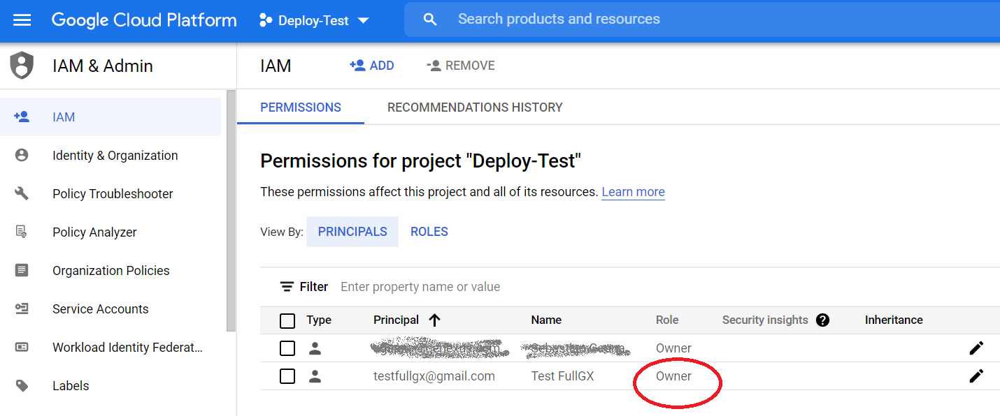
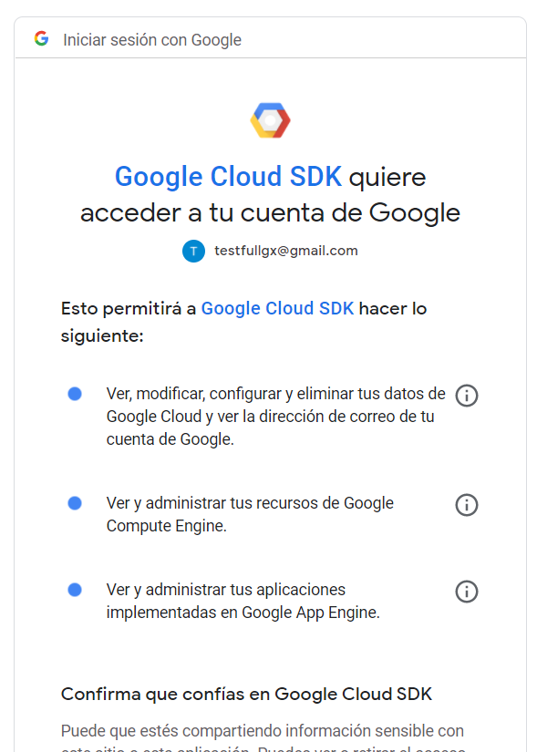

Below are the steps required to deploy a JAVA application to Google App Engine (a product of Google Cloud Platform).
The following steps are done using the console.
First, select or create a Cloud Platform Console project. To deploy your app to App Engine, you will need to register a project to create your project ID, which will determine the URL for the app.
Download & install the Google Cloud SDK.
Important: consider the following notes:
After the installation is complete, make sure you leave the options to start the shell and configure your installation selected. The installer starts a terminal window and runs the gcloud init command.
The default installation doesn't include the App Engine extensions required to deploy an application using gcloud commands.
So, you have to execute from a cmd:
gcloud components install app-engine-java
The Owner of the Cloud project must create the App Engine application.

So, in the machine where you execute the deployment, you have to be logged in as the project owner.
You can log in executing the following at the command line:
gcloud auth login
A web browser opens where Google Clouds SDK asks you for access to the Google account:

In addition, give Cloud Build permission to deploy apps in your project.
Check this document from Google for more information.
Now you are ready to deploy the app to Google App Engine. See How to deploy an application to Google App Engine.